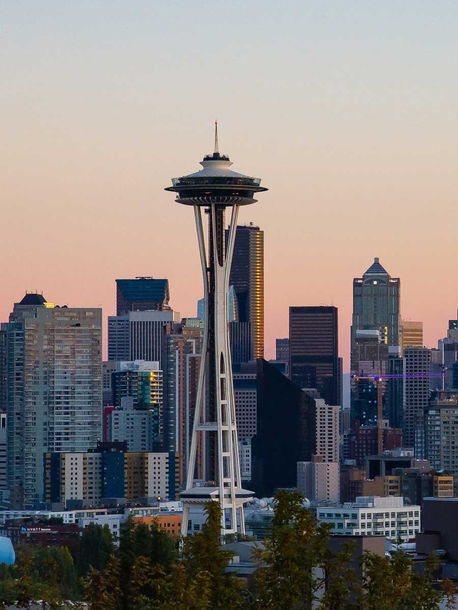
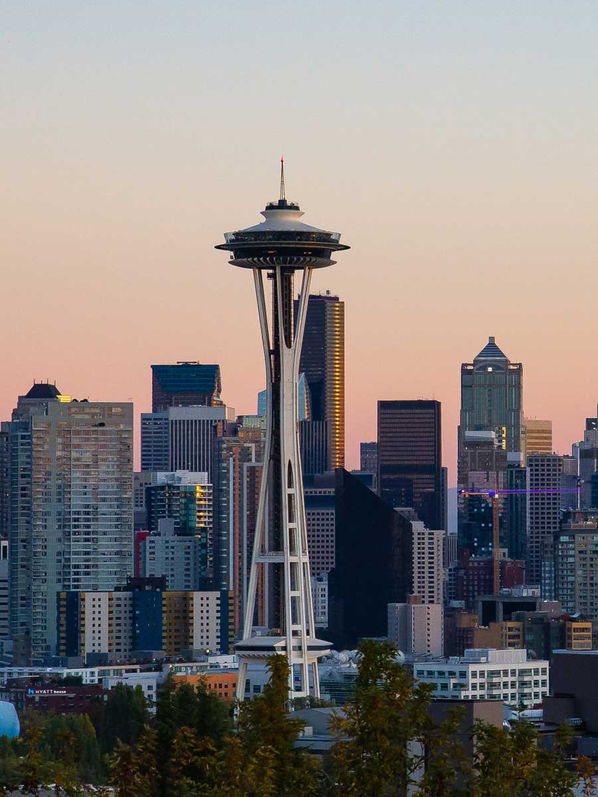

ABOUT ME
Currently a computer science student at the University of Washington in Seattle.
 

A short biography:
I'm a junior pursuing my Bachelor's degree in Computer Science at UW Seattle. I have a passion for technology and want to use CS to make a positive impact and do good in the world. I care a lot about people and making the world better for everyone, and believe that the best ideas come sourced from a diversity of thought and various types of people. I really enjoy talking to and connecting with others who are similar to and different from me, being a leader and teammate in my communities, and trying to make an impact whenever possible to solve challenging and dynamic problems. My UW journey has been filled with diverse and inspirational experiences, lots of joy alongside many challenges, and countless great people and communities who’ve supported and motivated me and my growth. And since I have more quarters ahead, I can’t wait to see what the future holds, since UW has already given me more opportunities than I could’ve imagined. I entered UW in Fall 2019, as a freshman CS major. I wanted to meet new people, form communities, and start making an impact, so I immediately joined two clubs I was drawn to. Impact++, which is a CS + Social Good club that does technical projects with local and international nonprofits, and Engineers Without Borders, which is an engineering club that does projects and travels internationally to implement them. In Impact++, I was on the DOST Education team, where I helped a nonprofit in India create free educational resources for children that were sent out over Whatsapp to hundreds of thousands of people - and was on the leadership board as Treasurer, where I tracked and managed our club finances and grants from companies such as Amazon and Palantir. In Engineers Without Borders, I was on the Nicaragua team and I helped design compostable toilets that were implemented in three local communities. I also wanted to try a business club since I’m interested in business and managing people/projects, so I joined the Business Ethics Association and was the Brand Ambassador on the leadership board, recruiting people from all majors at UW. In March 2020, Covid-19 hit while I was in my second quarter at UW - and it was devastating. I saw how much people worldwide were impacted, and my college experience came to a standstill as we got sent home suddenly. Seeing many friends, peers, and strangers suffering physically, emotionally, financially and in other ways, while also losing my time and place at UW and leaving my communities was really hard for me - especially since I enjoy being around people and being there in person to help others. But, we continued on and tried not to lose hope. I remained in my three clubs the rest of freshman year and we organized online events to keep our members connected. In the first full online quarter at UW, I took the Pharmacy 301 class that was very inspiring for me, as I learned from the guest speakers and professors about how much personal health matters in and out of a pandemic. The summer after freshman year ended, I did an internship at Angel Aid Cares, a nonprofit that works with Microsoft to help the mothers of children with rare diseases around the world connect with each other and get support. I also worked in the evenings and weekends at Chipotle, where I learned customer service skills and worked on a dynamic and diverse team. In my sophomore year Fall Quarter, I was a Teaching Assistant (TA) for the CS + Social Good class, and it was super rewarding to teach students who I was also learning a lot from. I was selected to be on the Neah Bay Riverways Team, where we volunteered with elementary school students from the Native American reservation in Neah Bay, Washington to encourage them to pursue higher education. The summer after sophomore year, I did an internship at Google, where I worked on a software engineering project that helped with efficient resource management and allocation decisions. And in the evenings, I did a summer program with IBM, where I learned about hardware and machinery. Finally, in Fall Quarter 2021 during my current junior year, I started working part time in 3 positions. I’m a Peer Adviser and CSE Ambassador in the Allen school, to help my fellow undergrad students with academic/career advising and do diversity and inclusion outreach/recruitment at underserved high schools in the Seattle area, respectively. Finally, I work for the UW Alumni Association as a Student Ambassador, because I care about keeping students and alumni connected and creating spaces where both can learn from and inspire each other. All of these experiences have shaped who I am and what I care about, making me a better person and leader. The clubs, jobs, and internships that I’ve done, the volunteer opportunities and nonprofits I’ve worked for, and general college life (even the covid pandemic) have made me stronger and allowed me to give back to more and more. I’ve learned how important and fulfilling it is to inspire others wherever and however I can, inside and outside of the classroom and in big and small ways. I realized that you can and should learn from everyone you come across, no matter where they’re from or who they are. I still care a lot about technology and using CS for good, but I’ve also found passions for education, accessibility, and finance along the way. I know how important diversity and inclusion is because I’ve worked with and for, and lived alongside, many diverse populations. I have experienced being a woman of color myself in leadership roles and also know firsthand how powerful having diverse role models to look up to can be. This is my story, and I’ve genuinely loved my time so far at UW and cannot wait to continue making an impact in communities here.
~
A quick background for fun:
I graduated from Skyline High School with my IB Diploma in 2019. I am a second degree black belt in Tae Kwon Do, martial arts instructor and math tutor, and participated in programs such as Girls Who Code, DECA, Washington Aerospace Scholars, and Rocketry Club in high school. I also enjoy traveling, hiking, baking, watching sunsets, and drawing in my free time!
~
Why I created this website:
I wanted to brush up on my HTML skills and using GitHub to create an online portfolio of my life, learn how to create and host a personal page, do a fun and creative project, and use this as a record of what I’ve done to later look back at my life and communities I am in at UW.